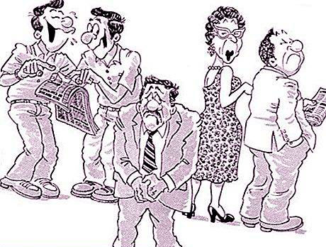

Что такое честь и достоинство ?
Честь - это социально значимая положительная оценка моральных и иных черт и свойств, облика гражданина, позитивно определяющих его положение в обществе. Честь выражает объективно значимое положение лица.
Достоинство - отражение этого положения в сознании личности, т.е. самооценка личности, основанная на его оценке обществом.

Что такое деловая репутация ?
Деловая репутация - приобретенная кем-либо, физическим или юридическим лицом, общественная оценка, создавшееся общее мнение о качествах, достоинствах, недостатках.
Честь, достоинство и деловая репутация гражданина охраняются законом.
Адвокат по защите чести и достоинства Коллегии адвокатов «Шериев и партнеры» располагает большим практическим опытом работы именно в данной сфере. Имея обширный положительный досудебный и судебный опыт в защите нематериальных благ, адвокат по защите чести и достоинства окажет Вам квалифицированную юридическую помощь.
Можно считать что репутация опорочена в следующих случаях:
-
Если происходит распространение ложной информации;
-
Если сведения порочат честь и достоинство гражданина;
-
Распространненые сведения не соответствуют действительности.
Согалсно ст. 152 ГК РФ, Гражданин вправе требовать по суду опровержения порочащих его честь, достоинство или деловую репутацию сведений, если распространивший такие сведения не докажет, что они соответствуют действительности. Опровержение должно быть сделано тем же способом, которым были распространены сведения о гражданине, или другим аналогичным способом.
Защита чести и достоинства адвокат
8 (925) 502-40-09
8 (925) 502-40-09
Напишите нам на WhatsApp
Способы распространения ложных сведений подрывающих честь и достоинство:
-
Трансляция по радио и телевидению
-
Публикация в газетах или иных СМИ
-
Информация в ресурсах в сети Интернет
-
Сообщение в публичном выступлении
-
Сообщение в письме или устно при беседе
Наши адвокаты по защите чести и достоинства.


Преимущества наших специалистов по защите чести и достоинства.
-
Адвокаты Коллегии имеют практический опыт работы более 15 лет.
-
Встречу с адвокатом Вы можете назначить в любом удобном месте.
-
В кратчайший срок Вы можете получить грамотно составленное правовое заключение по вопросу нарушения Ваших прав.
-
Возможна рассрочка платежей или поэтапная оплата услуг адвоката.
-
Мы возмещаем Ваши судебные расходы на ведение дела в суде!
Ответственность за посягательство на честь, достоинство и репутацию.
За распространение порочащих сведений виновные лица могут быть привлечены как к гражданско-правовой, так и к уголовной ответственности.
За распространение ложных порочащих сведений, предусмотрена ответственность за клевету по ст. 128.1 УК РФ
За оскорбление, т.е. унижение чести и достоинства другого лица, выраженное в неприличной форме предусмотрена ответственность по ст. 5.61 Кодекса РФ об административных правонарушениях.
Если лицо распространило в отношении Вас порочащие сведения, то Вы также можете предъявить иск о защите чести и достоинства или деловой репутации в порядке гражданского судопроизводства.
Стоимость услуг адвоката по защите чести и достоинства.
Удаление в соцсетях отзывов, порочащих честь и достоинство.
В связи со стремительным развитием интернет технологий, общество перешло к дистанционному виду общения и маркетинга.
Важную роль в жизни человека играют соцсети в связи чем стали обычным делом размещение нелицеприятных отзывов и комментарии от конкурентов или недоброжелателей.
Такие отзывы могут причинить ущерб чести достоинству и репутации гражданина, настолько крупный, что и честное имя и бизнес будут порушены окончательно.
Мы помогаем в удалении отзыва в соцсетях в сети интернет. Наши адвокаты по защите чести и достоинства имеют практический опыт по таким вопросам и помогут избавить Вас от головной боли, связанной с распространением порочащих Вас сведений.
Адвокат по защите чести, достоинства и репутации произведет необходимые действия по исключению недостоверных сведений из соцсетей и иных пабликов в интернете.
Услуги связанные с тематикой защиты чести и достоинства
Полезные статьи
Удаление негативных отзывов ...
Образцы документов по защите чести и достоинства.
- Заявление в суд о возбуждении уголовного дела по клевете
- Апелляционная жалоба по приговору о клевете
-
Исковое заявление о защите чести и достоинства.
Новости в законодательстве по тематике
Президент РФ Владимир Путин 01.07.21 г. подписал закон о внесудебной блокировке ресурсов, содержащих «порочащую информацию»
Поправки вносятся в Федеральный закон «Об информации, информационных технологиях и о защите информации». Согласно тексту документа, пострадавший должен написать заявление и подтвердить, что информация, опубликованная в интернете, «порочит его честь и достоинство или подрывает его репутацию и связана с обвинением в совершении преступления».
Затем прокуратура будет проверять заявление и факты 10 дней и выдаст заключение. В течение пяти дней генпрокурор или его заместитель проверит обоснованность решения региональной прокуратуры и передаст данные в Роскомнадзор с требованием удалить информацию. Сайт должен будет ее удалить, иначе РКН может заблокировать страницу.